Город
крошечных домов
Сначала один домик. Потом его копия. Меняй копии — и на улице появятся разные соседи!
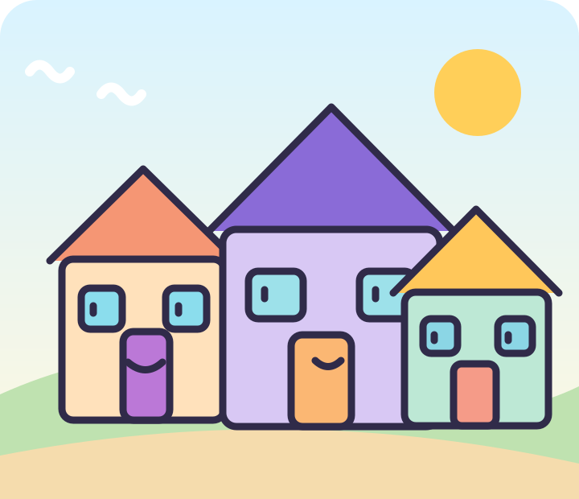
Тук-тук! Кто живёт рядом?Копия — начало новой идеи
Клавиши Shift+D делают копию выбранной детали. Оригинал остаётся на месте, а копию можно передвинуть и изменить. Так один дом становится улицей.
Попробуй заметить: что осталось одинаковым у двух домов, а что ты изменил? Можно показать пальцем прямо на модели.
Первый домик
Куб из первой недели станет стенами. Знакомый конус из второй недели превратится в сказочную крышу.
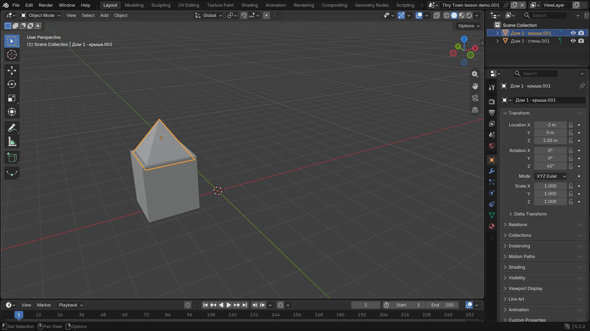
Домик ждёт соседей
На снимке крыша похожа на шапочку. Твоя может быть шире, ниже или круглой.
Подними стены
В новой сцене выбери куб. Нажми S, затем Z и сделай его повыше. Через G, Z подними так, чтобы низ стоял на сетке. Для вида спереди нажми 1 на цифровой клавиатуре или открой View → Viewpoint → Front.
Покажи мне: стены из куба
Настоящий Blender 5.2. Нажми на картинку, чтобы рассмотреть её крупнее. Твоя модель может выглядеть иначе.
Куб стал стенами
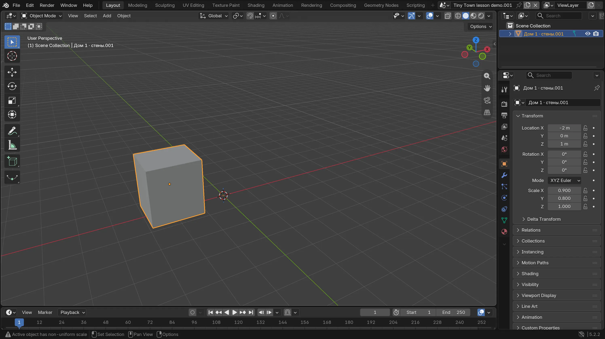
Выбери куб. Через S, Z сделай его выше, через G, Z подними над сеткой. На снимке стоит первый простой корпус дома.
Проверь: Куб похож на стены, а его низ касается сетки.
Надень крышу
Открой Add → Mesh → Cone (Добавить → Сетка → Конус). Пока конус выбран, сделай его шириной с дом через S и подними через G, Z. Обычный круглый конус отлично подходит. На снимке взрослый сделал квадратную крышу через настройки добавления.
Покажи мне: крыша на доме
Настоящий Blender 5.2. Нажми на картинку, чтобы рассмотреть её крупнее. Твоя модель может выглядеть иначе.


Что у меня получилось
Заселяем соседа
Сегодня главное открытие: копия похожа на оригинал, но живёт своей жизнью. Скопируй стены, потом крышу и измени высоту нового дома.
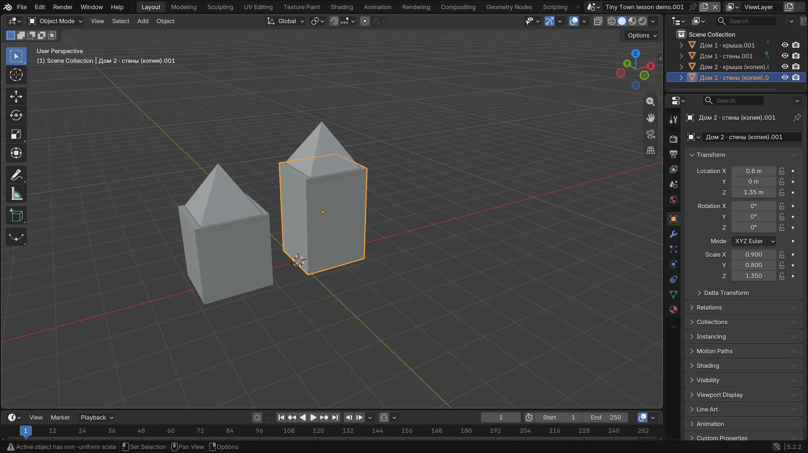
Один низкий, другой высокий
Соседи могут быть почти одинаковыми или совсем разными.
Скопируй стены
Выбери только стены первого дома. Нажми Shift+D, затем X. Передвинь мышью вправо и щёлкни. Старые стены должны остаться на месте.
Покажи мне: появилась копия
Настоящий Blender 5.2. Нажми на картинку, чтобы рассмотреть её крупнее. Твоя модель может выглядеть иначе.
Стены получили соседа
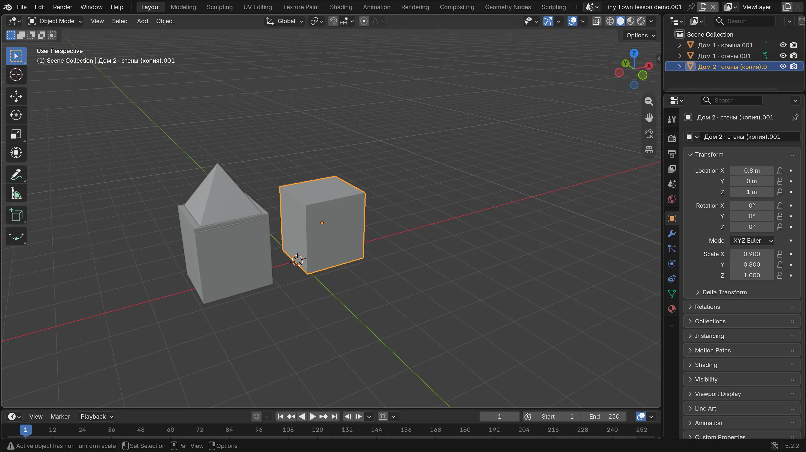
Выбери стены, нажми Shift+D, затем X, передвинь копию в сторону и щёлкни. Не нажимай Delete: первые стены должны остаться.
Проверь: Рядом два одинаковых кубика-стены; один выбран оранжевым контуром.
Скопируй крышу
Выбери крышу первого дома и снова нажми Shift+D, X. Передвинь её над новыми стенами и щёлкни. Если крыша потерялась, выдели копию и подвинь через G, X.
Покажи мне: крыша для соседа
Настоящий Blender 5.2. Нажми на картинку, чтобы рассмотреть её крупнее. Твоя модель может выглядеть иначе.
У соседа тоже появилась крыша
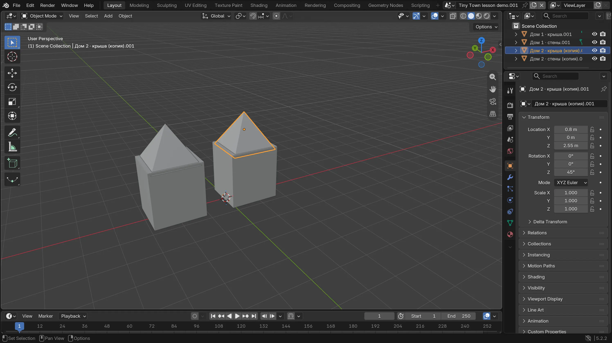
Выбери первую крышу и повтори Shift+D, X. Подвинь копию над новыми стенами и щёлкни. Стены и крышу пока копируем по очереди.
Проверь: Два дома рядом; старая крыша осталась на первом доме.
Измени копию
Выбери новые стены. Нажми S, Z и сделай их выше или ниже. Затем подвинь стены через G, Z, чтобы они стояли на сетке, а крышу — чтобы она лежала сверху. Взрослый может помочь поставить детали.
Покажи мне: новый дом стал другим
Настоящий Blender 5.2. Нажми на картинку, чтобы рассмотреть её крупнее. Твоя модель может выглядеть иначе.


Что ты заметил? Покажи старый и новый дом: что у них общее, а что стало другим?
Что у меня получилось
У домика свой знак
Кто живёт в первом доме? Придумай ему знак: окошко, дверь или смешную вывеску. Одной детали достаточно.
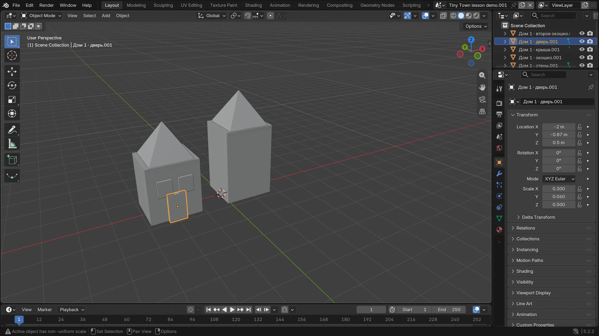
Тук-тук, кто там?
Два окна и дверь — пример. Можно оставить одно окно или сделать вывеску.
Поставь окошко
Открой Add → Mesh → Cube. Уменьши новый куб через S, сделай тонким через S, Y и передвинь к передней стене через G, Y. Подними через G, Z. Попроси взрослого помочь найти переднюю сторону.
Покажи мне: где окошко
Настоящий Blender 5.2. Нажми на картинку, чтобы рассмотреть её крупнее. Твоя модель может выглядеть иначе.
Маленький куб — окошко
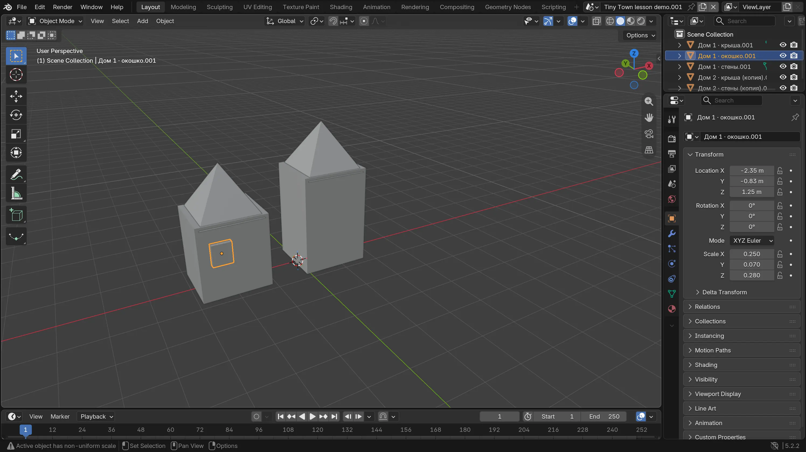
Добавь куб через Add → Mesh → Cube. Сделай его маленьким через S и тонким через S, Y. Поставь перед стеной через G, Y и подними через G, Z.
Проверь: Окошко видно перед стеной. Если оно исчезло, проверь вид сбоку и подвинь его наружу.
Если хочется — повтори знак
Выбери окошко, нажми Shift+D, X и передвинь копию рядом. Первое окошко останется на месте.
Покажи мне: два окошка
Настоящий Blender 5.2. Нажми на картинку, чтобы рассмотреть её крупнее. Твоя модель может выглядеть иначе.
Окошко повторилось
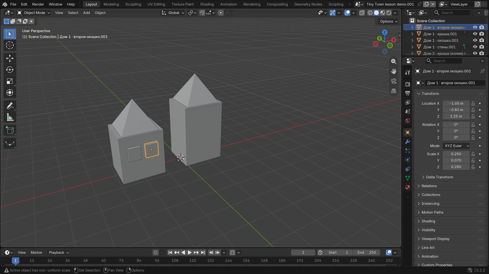
Выбери первое окошко, нажми Shift+D, X и передвинь копию вбок. Можно остановиться и с одним окном.
Проверь: На первом доме два окошка, а первое осталось на месте.
Придумай дверь или вывеску
Ещё один плоский куб может стать дверью или табличкой. Если не хочется добавлять детали, просто расскажи, кто живёт в доме.
Покажи мне: дверь из куба
Настоящий Blender 5.2. Нажми на картинку, чтобы рассмотреть её крупнее. Твоя модель может выглядеть иначе.


Что у меня получилось
Улица готова!
Посмотри на соседей вместе. Как называется улица? Хочешь — скопируй стены и крышу ещё раз для третьего маленького домика.
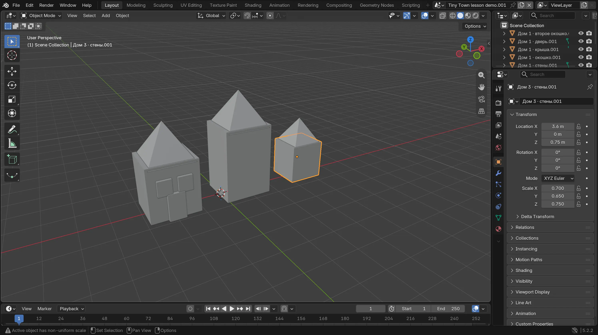
Маленькая улица, большая история
Третий дом необязателен. Два соседних дома уже образуют улицу.
Если хочется — добавь соседа
Как во второй миссии, скопируй стены через Shift+D, X, затем отдельно скопируй крышу. Передвинь их рядом. Можешь уменьшить третий домик клавишей S.
Покажи мне: три разных дома
Настоящий Blender 5.2. Нажми на картинку, чтобы рассмотреть её крупнее. Твоя модель может выглядеть иначе.
Сохрани свою улицу
Вместе со взрослым открой File → Save As, выбери знакомую папку и сохрани town.blend. Если файл уже сохранён, в следующий раз подойдёт File → Save. Назови улицу и расскажи, кто здесь живёт.
Покажи мне: что сохранять
Настоящий Blender 5.2. Нажми на картинку, чтобы рассмотреть её крупнее. Твоя модель может выглядеть иначе.
Выбери File → Save As
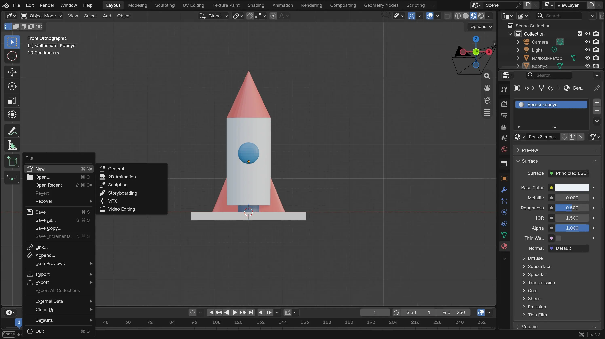
Открой File слева вверху и выбери Save As. На снимке показана знакомая сцена с ракетой: меню то же. Вместе со взрослым найди папку и сохрани town.blend. Если файл уже сохранён, достаточно File → Save.
Проверь: В выбранной папке появился файл town.blend. Запомни эту папку.


Что у меня получилось
Ура, на улице появились соседи!
Какой домик тебе нравится больше? Можно оставить улицу такой или потом добавить к ней ещё жителей.
Для взрослых: подготовка и помощь
Это четыре короткие встречи. Для 6–7 лет читайте шаги вслух и помогайте с мышью и клавиатурой; в 8–10 лет постепенно оставляйте ребёнку больше самостоятельности. Можно остановиться после любого удачного шага.
Перед началом
- Откройте Blender 5.2 LTS в Layout и Object Mode, новую стандартную сцену. В примере снимков квадратная крыша сделана из конуса с четырьмя вершинами. Детям достаточно обычного круглого конуса.
- Помогите поставить детали на нужную высоту и вынести окно перед стеной. Числа на снимках описывают только пример, точность не нужна.
- Главное открытие — копия остаётся похожей на оригинал, но её можно менять отдельно. Попросите ребёнка показать общее и различия двух домов. Array, объединение объектов и точная симметрия не нужны.
- Сохраните отдельный файл town.blend. Снимки модели сделаны в Blender 5.2 на отдельной учебной сцене; для меню Save As повторно использован снимок из урока с ракетой. Модель ребёнка может быть другой.
Что считать успехом
Ребёнок попробовал Shift+D, увидел, что оригинал остался на месте, изменил хотя бы одну копию и смог показать разницу. Два дома достаточно; третий дом, окна и дверь необязательны. Взрослый может выполнить техническую часть, пока ребёнок выбирает, что изменить.